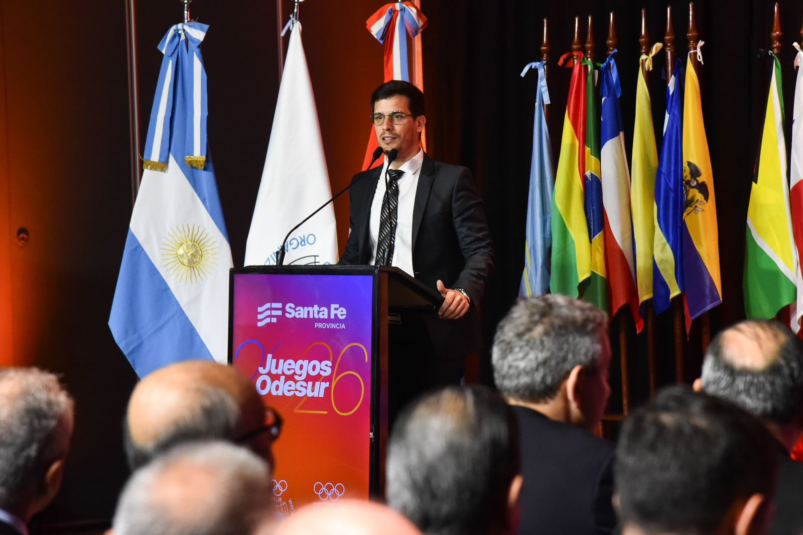

Santa Fé 2026 forma uma das principais competições multiesportivas do continente e ocupa uma posição importante dentro do ciclo olímpico. A 13ª edição dos Jogos terá Rosário, Santa Fé e Rafaela como as três principais cidades-sede na Argentina.
Mais do que um grande quadro de medalhas entre os países da América do Sul, Santa Fé 2026 funciona como ponto de encontro entre atletas consagrados, competidores em desenvolvimento e seleções que já começam a estruturar seus projetos para Lima 2027 e Los Angeles 2028. Para o Brasil, essa característica é ainda mais evidente: o Comitê Olímpico do Brasil confirmou uma delegação de cerca de 500 atletas, distribuídos por 52 modalidades do programa.
O tamanho dos Jogos Sul-Americanos Santa Fé 2026
A dimensão do evento coloca entre os grandes acontecimentos esportivos do calendário continental. A organização informou mais de 4 mil atletas, representantes de 15 Comitês Olímpicos Nacionais, competindo em 43 esportes e 60 disciplinas ao longo de 15 dias.
Países participantes
Os Jogos reúnem representantes de 15 países ligados à ODESUR:
- Argentina
- Aruba
- Bolívia
- Brasil
- Chile
- Colômbia
- Curaçao
- Equador
- Guiana
- Panamá
- Paraguai
- Peru
- Suriname
- Uruguai
- Venezuela
A relação reflete a estrutura da Organização Desportiva Sul-Americana (ODESUR), responsável pela principal competição multiesportiva da região.
Santa Fé foi escolhida para receber a 13ª edição durante a Assembleia Geral Ordinária realizada em Buenos Aires. A candidatura recebeu o apoio unânime dos 15 membros da organização, consolidando a província argentina como sede da competição.
Rosário, Santa Fé e Rafaela dividem o protagonismo
Uma das características do evento é a distribuição das competições entre diferentes pólos esportivos.
Rosário concentra um grande conjunto de instalações. Entre os cenários previstos estão o Centro Aquático, estruturas do Parque Independência, o Estádio Marcelo Bielsa para o futebol masculino, instalações da Associação Rosarina de Futebol para o torneio feminino, além de espaços destinados a modalidades como ginástica, judô, karatê, vôlei de praia, hipismo, golfe e esportes aquáticos.
Na cidade de Santa Fé, o Centro de Alto Rendimento Deportivo Pedro Candioti, conhecido como CARD, ocupa papel central. O complexo recebe, entre outras atividades, o atletismo e o handebol. A capital provincial também utiliza a Laguna Setúbal e o Lago Sur para modalidades náuticas, além de estruturas destinadas a escalada, bocha e hóquei sobre a grama.
Rafaela completa o eixo principal da organização com instalações voltadas especialmente para modalidades sobre rodas e esportes indoor. Entre as obras associadas ao projeto estão o estádio multipropósito, o velódromo coberto e estruturas para BMX e skate.
Nem todas as provas, porém, ficam restritas às três principais cidades. A organização incorporou subsedes específicas fora desse eixo: o surfe será realizado em Mar del Plata, o bowling em Vicente López, na região de Buenos Aires, e o softbol em Paraná. A solução permite adequar cada modalidade às condições técnicas e geográficas necessárias.
Os esportes que fazem parte das competições
O programa de Santa Fé 2026 é amplo e mistura modalidades olímpicas tradicionais, esportes de forte identidade regional e novidades.
O programa reúne esportes tradicionais do ciclo olímpico e modalidades com forte presença no continente. Entre eles estão:
- Atletismo
- Natação
- Águas abertas
- Futebol
- Vôlei
- Vôlei de praia
- Handebol
- Hóquei sobre a grama
- Tênis
- Tênis de mesa
- Judô
- Boxe
- Karatê
- Taekwondo
- Esgrima
- Levantamento de peso
- Tiro esportivo
- Tiro com arco
- Triatlo
- Vela
- Golfe
- Rugby
- Skate
- Escalada esportiva
- Raquetebol
- Squash
- Pelota basca
- Patinação
Além dessas modalidades, algumas são divididas em diferentes disciplinas, ampliando ainda mais o programa competitivo dos Jogos.
O ciclismo aparece em Santa Fé 2026 dividido em cinco disciplinas:
- BMX freestyle
- BMX racing
- Mountain bike
- Ciclismo de pista
- Ciclismo de estrada
Nos esportes aquáticos, o programa também é diversificado:
- Natação
- Águas abertas
- Saltos ornamentais
- Nado artístico
- Polo aquático
Essa divisão ajuda a mostrar a dimensão real dos Jogos, já que uma mesma modalidade esportiva pode distribuir medalhas em diferentes disciplinas e provas ao longo da competição.
Essa diversidade é uma das características dos Jogos Sul-Americanos: o evento permite que modalidades com menor exposição cotidiana dividam espaço com esportes amplamente acompanhados pelo público brasileiro.
Modalidade entre as novidades
Santa Fé 2026 também apresenta mudanças importantes em seu programa.
O pádel faz sua estreia nos Jogos Sul-Americanos. A modalidade foi programada para Rafaela, reforçando a expansão internacional de um esporte que possui grande presença competitiva na Argentina e em outros países do continente.
Outra novidade são os esports, incluídos pela primeira vez no programa dos Jogos Sul-Americanos. A competição em Rosário reúne três títulos: VALORANT, EA SPORTS FC e Assetto Corsa GT, com formatos masculinos, femininos ou mistos de acordo com cada disputa.
A entrada dessas modalidades ajuda a mostrar como o programa sul-americano procura combinar esportes tradicionais com segmentos que ampliaram sua relevância competitiva nos últimos anos.
Brasil defende o protagonismo continental
Para o Time Brasil, Santa Fé 2026 possui um peso esportivo especial.
A delegação brasileira chega a Santa Fé 2026 defendendo o protagonismo conquistado na edição anterior, após dominar Assunção 2022. Nos Jogos Sul-Americanos de Assunção 2022, a delegação brasileira terminou na liderança do quadro geral.
Campanha em 2022:
- 133 medalhas de ouro
- 100 medalhas de prata
- 86 medalhas de bronze
- 319 medalhas no total
O desempenho colocou o país no topo da competição e reforça o Brasil novamente como uma das principais forças esportivas dos Jogos Sul-Americanos em 2026.
O COB anunciou cerca de 500 atletas brasileiros em 52 modalidades. A composição mistura esportistas experientes no cenário internacional e nomes em processo de desenvolvimento.
Entre os nomes de maior destaque confirmados na relação oficial do Time Brasil para Santa Fé 2026 estão:
- Ana Marcela Cunha — águas abertas, campeã olímpica e mundial
- Caio Bonfim — atletismo, medalhista olímpico na marcha atlética
- Marcus D’Almeida — tiro com arco, vice-campeão mundial
- Bárbara Domingos — ginástica rítmica, finalista olímpica no individual geral
- Felipe Wu — tiro esportivo, medalhista de prata nos Jogos Olímpicos Rio 2016
- Giullia Penalber — wrestling, quinta colocada nos Jogos Olímpicos de Paris 2024
- Evandro — vôlei de praia, campeão mundial
- Carol Solberg — vôlei de praia
- Rebecca Cavalcante — vôlei de praia
- Silvana Lima — surfe
A delegação também conta com outros atletas de trajetória relevante no esporte brasileiro, como Paulo André, no atletismo; Ícaro Miguel e Milena Titoneli, no taekwondo; Etiene Medeiros, Guilherme Costa e Leonardo de Deus, na natação; Stephan Barcha, no hipismo; e Lucas Verthein, no remo.
O atletismo será uma das modalidades de maior atenção para o Brasil em Santa Fé, especialmente em um ano carregado de grandes compromissos internacionais. O calendário de 2026 também inclui o World Athletics Ultimate Championship, novo torneio da World Athletics que terá Alison dos Santos, reforçando a importância da temporada para os principais nomes brasileiros no atletismo.
Essa combinação entre atletas consolidados e uma nova geração faz parte da função esportiva dos Jogos. Para alguns competidores, o evento representa oportunidade de buscar um grande resultado continental. Para outros, será uma etapa de formação em um ambiente multiesportivo semelhante ao encontrado nos Jogos Pan-Americanos e Olímpicos.
Santa Fé 2026 também vale vagas para Lima 2027
A importância dos Jogos não termina nas medalhas.
De acordo com o Comitê Olímpico do Brasil, os Jogos oferecem ao Time Brasil possibilidades de classificação para os Jogos Pan-Americanos de Lima 2027 em 14 modalidades. Entre elas estão atletismo, bowling, canoagem velocidade, escalada esportiva, hipismo, karatê, tiro com arco, triatlo e vela. O Brasil já chegou ao evento com classificações asseguradas no handebol e no pentatlo moderno.
Isso transforma determinadas provas em disputas com consequência para além do próprio pódio sul-americano. Uma medalha ou determinada colocação pode fazer parte de um processo classificatório que terá impacto direto na formação da delegação brasileira para Lima.
Por ocorrer no meio do ciclo até Los Angeles 2028, Santa Fé também funciona como laboratório competitivo. Técnicos, confederações e atletas podem avaliar desempenho, formação de equipes, adaptação a eventos multiesportivos e necessidades para as temporadas seguintes.
Onde ver os Jogos
A programação de transmissão dos Jogos Sul-Americanos Santa Fé 2026 para o público brasileiro ainda não foi detalhada oficialmente. A Time Brasil TV, canal do Comitê Olímpico do Brasil no YouTube, transmite regularmente competições multiesportivas e já inclui os Jogos Sul-Americanos entre os eventos contemplados por sua estratégia de cobertura. A grade específica de Santa Fé 2026, porém, ainda não foi divulgada pelo COB.
Nos esports, a organização confirmou o Twitch como parceiro oficial de streaming das competições, previstas entre 12 e 16 de setembro.
A história dos Jogos Sul-Americanos
Os Jogos têm raízes na década de 1970. A primeira edição aconteceu em 1978, em La Paz, na Bolívia, ainda dentro da tradição que ficou conhecida inicialmente como Jogos Cruz del Sur. O Fogo Sul-Americano conserva uma ligação simbólica com essa origem: a chama de Santa Fé 2026 foi acesa em Tiwanaku, na Bolívia, local associado à cerimônia desde a primeira edição.
A própria província de Santa Fé possui relação histórica com o evento. Rosário recebeu os Jogos Cruz del Sur de 1982, e a realização de 2026 recolocou a região no centro do esporte continental mais de quatro décadas depois.
Infraestrutura é parte do legado
Os Jogos provocaram um amplo processo de construção e modernização de instalações esportivas. Rosário recebeu novas estruturas como o centro aquático e arenas no Parque Independência. Santa Fé concentrou intervenções no CARD e ganhou um novo estádio multipropósito. Rafaela recebeu investimentos em seu complexo esportivo, incluindo velódromo e estruturas para esportes sobre rodas.
Também foram planejadas Vilas Sul-Americanas para receber atletas e delegações. A proposta oficial é que parte dessas estruturas tenha utilização permanente depois da competição, transformando o investimento dos Jogos em patrimônio esportivo, urbano e social.
Esse é um dos pontos que diferenciam a avaliação histórica de um evento multiesportivo: o resultado não é medido apenas pelas medalhas distribuídas durante duas semanas, mas também pela capacidade de deixar locais de treinamento, competição e desenvolvimento esportivo utilizáveis nos anos seguintes.
Abertura no Monumento à Bandeira
A cerimônia de abertura está marcada para 12 de setembro no entorno do Monumento Nacional à Bandeira, em Rosário. O local, um dos espaços mais simbólicos da Argentina, foi escolhido para receber o início oficial da competição.
A organização também definiu Capi como mascote oficial dos Jogos. O personagem integra a identidade visual e institucional de Santa Fé 2026 e foi desenvolvido como uma figura ligada à torcida e à integração entre os países participantes.
A importantância dos Jogos
A competição reúne praticamente todos os elementos de um grande evento continental: milhares de atletas, dezenas de esportes, diferentes cidades-sede, campeões internacionais, jovens talentos e vagas em disputa para o próximo nível do sistema esportivo das Américas.
Para o Brasil, a edição ainda carrega o desafio de defender a condição de principal potência da edição anterior, ao mesmo tempo em que serve para construir equipes pensando em Lima 2027 e Los Angeles 2028. Para a Argentina, representa a realização de um dos maiores projetos multiesportivos já organizados pela província de Santa Fé.
Os XIII Jogos Sul-Americanos, portanto, não se resumem aos resultados registrados entre 12 e 26 de setembro. A competição conecta a tradição iniciada em 1978 ao presente do esporte continental e funciona como uma das principais pontes entre a realidade sul-americana, os Jogos Pan-Americanos e o ciclo olímpico.